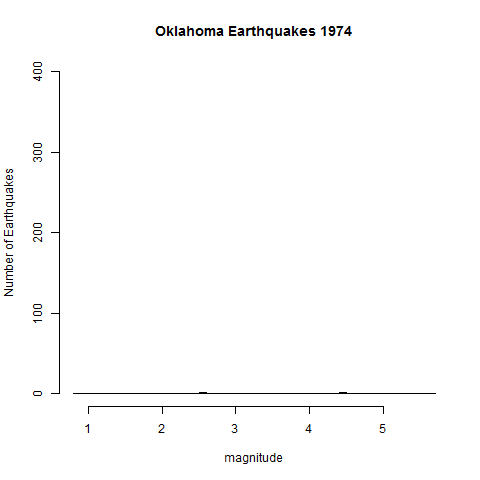
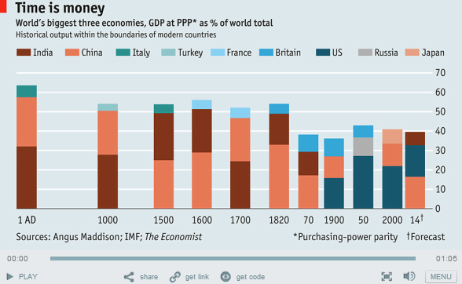

A histogram is a specific visual representation of data, usually a graph using bars without spaces to represent the number of incidents in a distinct group or sample set. The etymology of the word histogram is from Ancient Greek: histos "anything set upright" (as the masts of a ship, or the vertical bars of a histogram); and gramma "drawing, record, writing". Concerning the history of this graphical representation it seems that Karl Pearson introduced this name in 1891 and the etymology might come from “historical diagram” which was the main interest of Pearson at that moment.
The x-axis is the horizontal axis and the y-axis is the vertical axis. Both give essential information to reading the histogram. Many histograms show the results of the frequency of an occurrence and will have a y-axis indicating frequency. The x-axis will tell the ranges into which the data have been grouped.
Bar charts and histograms are similar, but with some very specific differences. A bar chart groups numbers into categories, while histograms group numbers into ranges.
The advantage of using a histogram is the clear representation of continuous dataset such as height, time, weight etc. The disadvantages could be mainly related to the possibility of representing the info in 2 dimensions but now it is possible to build 3D histogram that can also have interesting geographical reference in order to locate the data into a particular site. http://www.goodly.co.in/page/22/?paged=22.
Oklahoma eartquakes
Time is money,"The economist"
